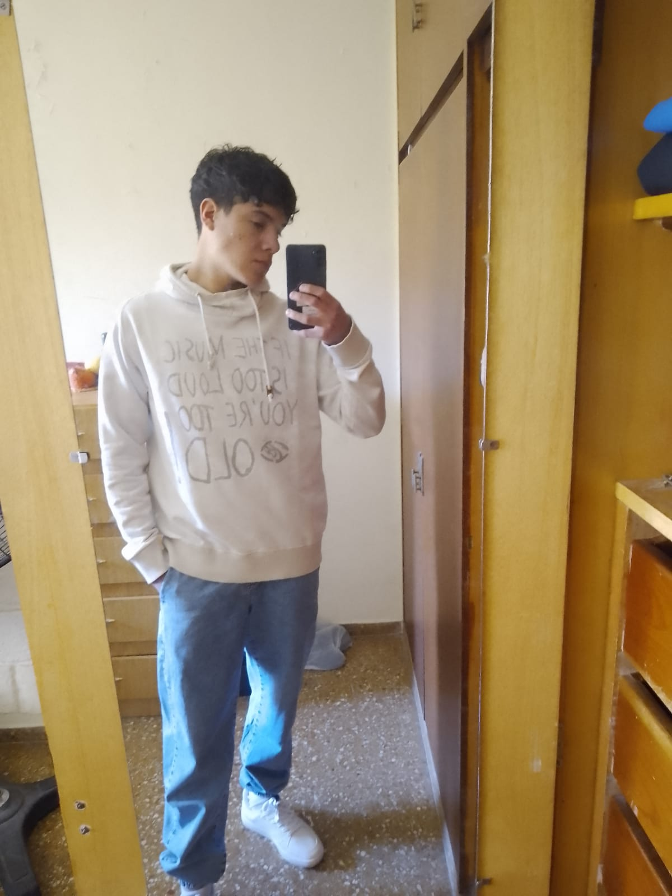

Nací el 23 de noviembre de 2009. Tengo 16 años y cuento con 1 año de experiencia laboral en el área de reparación de celulares. Soy una persona responsable y comprometida con mi trabajo.
Servicio técnico (2024 - 2026)
Experiencia en cambio de pantallas, placas de carga y diagnóstico sencillo de fallas técnicas.
José Manuel Estrada 4-089 (2023 - 2026)
Orientación tecnológica
Español nativo